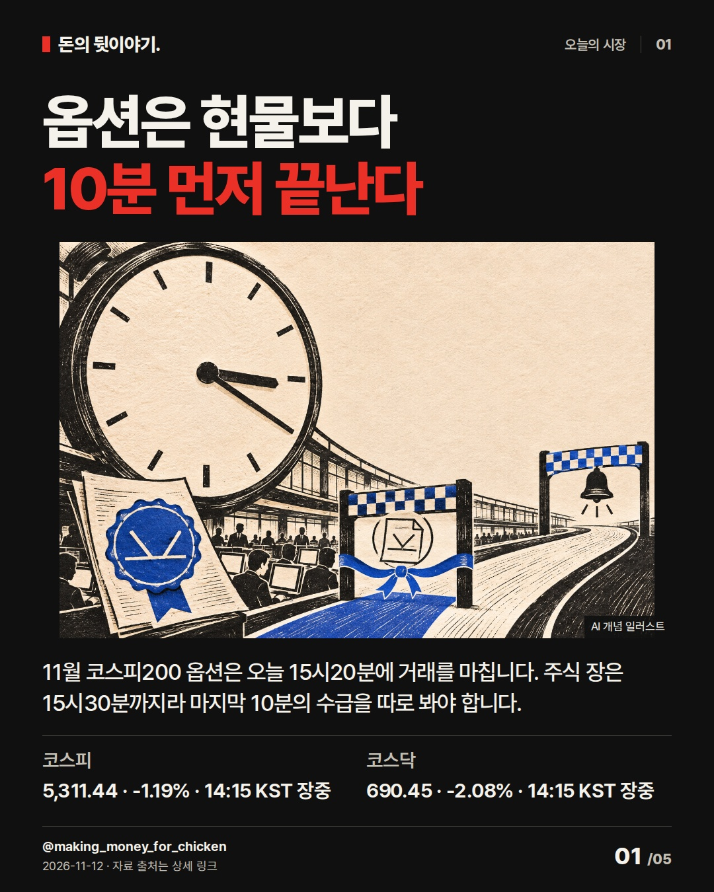
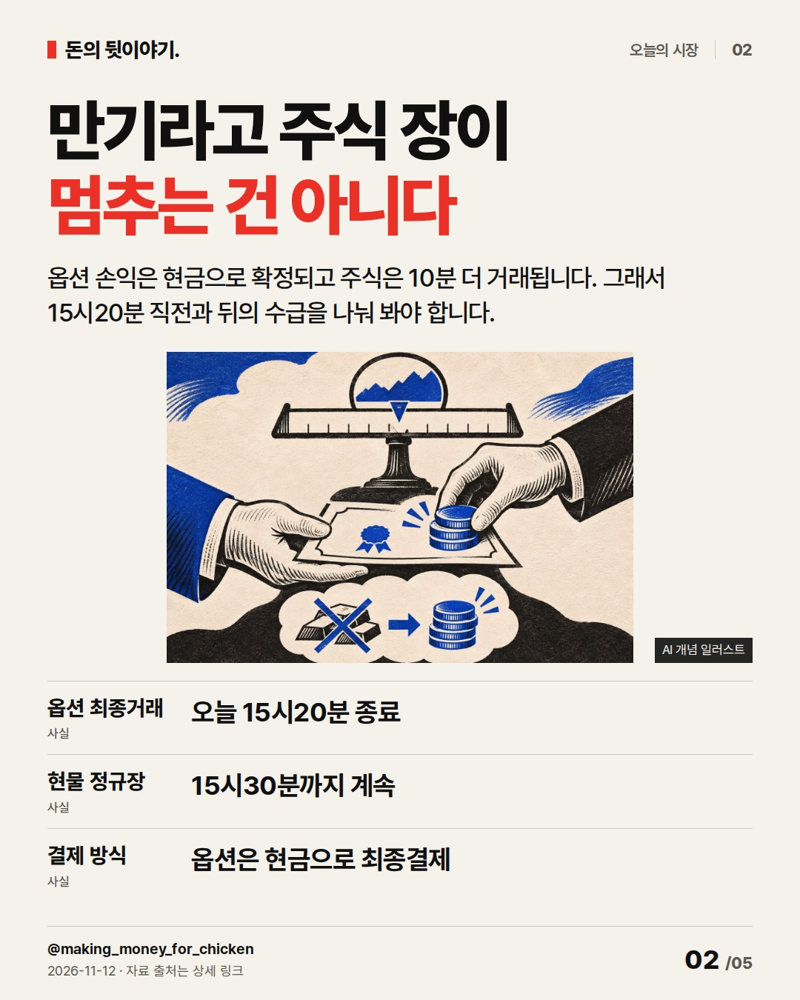
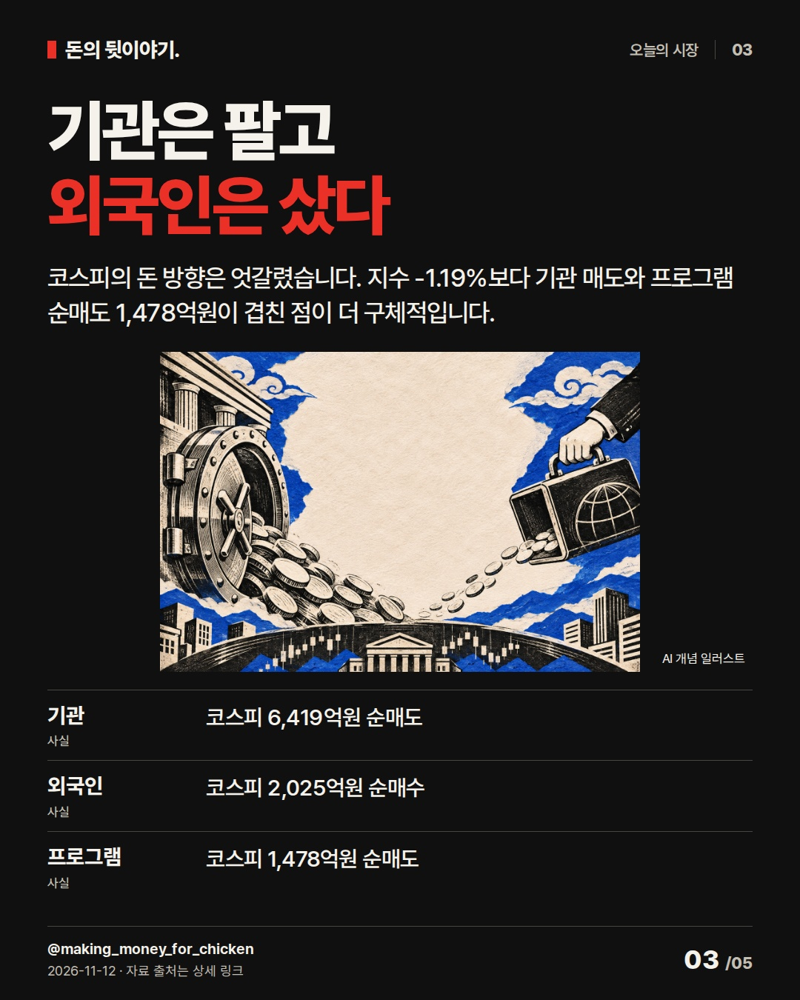
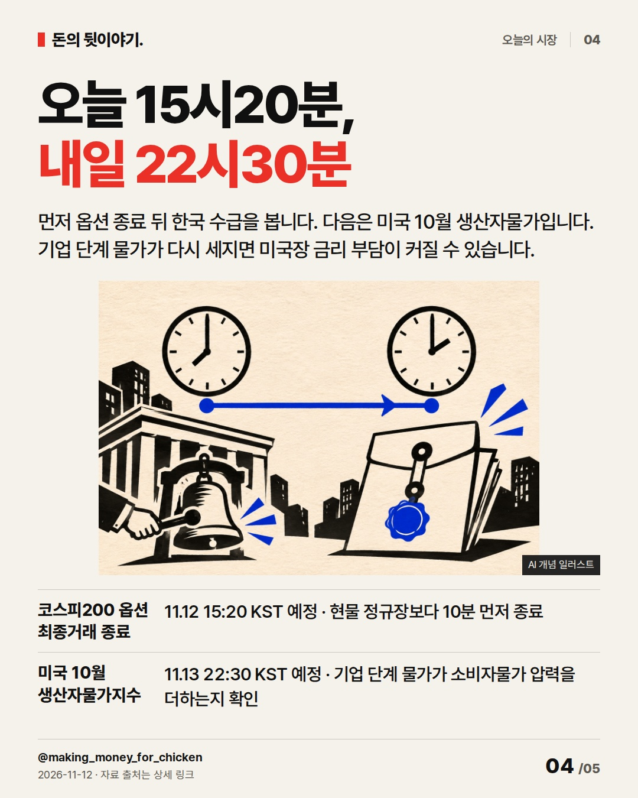
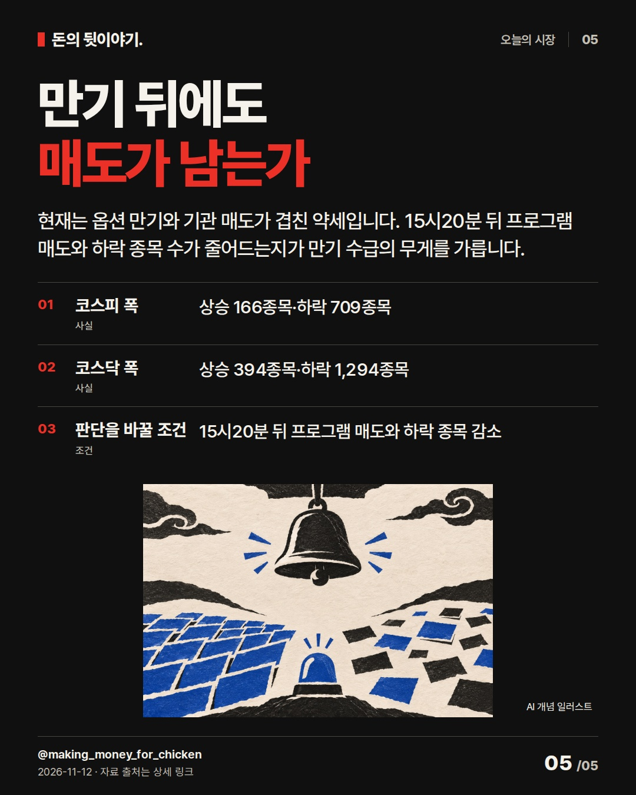

옵션은 현물보다
10분 먼저 끝난다
옵션은 오늘 15시20분, 주식은 15시30분에 끝납니다. 만기라는 이름보다 그 10분 뒤에도 매도와 하락 종목이 남는지가 더 중요합니다. #코스피 #옵션만기 #시장수급
옵션은 현물보다
10분 먼저 끝난다

11월 코스피200 옵션은 오늘 15시20분에 거래를 마칩니다. 주식 장은 15시30분까지라 마지막 10분의 수급을 따로 봐야 합니다.
- 코스피: 5,311.44 · -1.19% · 14:15 KST 장중
- 코스닥: 690.45 · -2.08% · 14:15 KST 장중
AI 생성 개념 일러스트 · 실제 현장이나 공식 제품 사진이 아닙니다.만기라고 주식 장이
멈추는 건 아니다

옵션 손익은 현금으로 확정되고 주식은 10분 더 거래됩니다. 그래서 15시20분 직전과 뒤의 수급을 나눠 봐야 합니다.
- 옵션 최종거래: 오늘 15시20분 종료
- 현물 정규장: 15시30분까지 계속
- 결제 방식: 옵션은 현금으로 최종결제
AI 생성 개념 일러스트 · 실제 현장이나 공식 제품 사진이 아닙니다.기관은 팔고
외국인은 샀다

코스피의 돈 방향은 엇갈렸습니다. 지수 -1.19%보다 기관 매도와 프로그램 순매도 1,478억원이 겹친 점이 더 구체적입니다.
- 기관: 코스피 6,419억원 순매도
- 외국인: 코스피 2,025억원 순매수
- 프로그램: 코스피 1,478억원 순매도
AI 생성 개념 일러스트 · 실제 현장이나 공식 제품 사진이 아닙니다.오늘 15시20분,
내일 22시30분

먼저 옵션 종료 뒤 한국 수급을 봅니다. 다음은 미국 10월 생산자물가입니다. 기업 단계 물가가 다시 세지면 미국장 금리 부담이 커질 수 있습니다.
- 코스피200 옵션 최종거래 종료: 11.12 15:20 KST 예정 · 현물 정규장보다 10분 먼저 종료
- 미국 10월 생산자물가지수: 11.13 22:30 KST 예정 · 기업 단계 물가가 소비자물가 압력을 더하는지 확인
AI 생성 개념 일러스트 · 실제 현장이나 공식 제품 사진이 아닙니다.만기 뒤에도
매도가 남는가

현재는 옵션 만기와 기관 매도가 겹친 약세입니다. 15시20분 뒤 프로그램 매도와 하락 종목 수가 줄어드는지가 만기 수급의 무게를 가릅니다.
- 코스피 폭: 상승 166종목·하락 709종목
- 코스닥 폭: 상승 394종목·하락 1,294종목
- 판단을 바꿀 조건: 15시20분 뒤 프로그램 매도와 하락 종목 감소
AI 생성 개념 일러스트 · 실제 현장이나 공식 제품 사진이 아닙니다.자료 출처
- 네이버 금융 · 코스피 실시간 지수 · 2026-11-12 14:15 KST; 5,311.44, 전일 5,375.36 대비 -1.19% · 조회 2026-11-12T14:16:30+09:00
- 네이버 금융 · 코스닥 실시간 지수 · 2026-11-12 14:15 KST; 690.45, 전일 705.10 대비 -2.08% · 조회 2026-11-12T14:16:30+09:00
- 네이버 금융 · 코스피 장중 수급·시장 폭 · 2026-11-12 14:16 KST 확인; 외국인 +2,025억, 기관 -6,419억, 프로그램 -1,478억, 상승 166·하락 709 · 조회 2026-11-12T14:16:40+09:00
- 네이버 금융 · 코스닥 장중 수급·시장 폭 · 2026-11-12 14:16 KST 확인; 개인 +3,385억, 외국인 -3,161억, 프로그램 -3,210억, 상승 394·하락 1,294 · 조회 2026-11-12T14:16:40+09:00
- 한국거래소 · 코스피200 옵션 거래제도 · 월물 최종거래일은 두 번째 목요일, 최종거래일 거래시간은 08:45~15:20, 현금결제 · 조회 2026-11-12T14:10:00+09:00
- 미국 노동통계국 · 2026년 11월 발표 일정 · 2026-11-13 08:30 EST; 2026년 10월 생산자물가지수 발표 예정 · 조회 2026-11-12T14:17:30+09:00
- 불스토리 · 미국 국채금리 하락과 반도체 강세, 코스피 투자 영향 (편집 참고) · 공식 사이트 본문·이미지 설명·체크 조건 열람; Instagram 카드 미열람 · 조회 2026-11-12T14:13:00+09:00
- YTN 생생경제 · 홍춘욱 인터뷰 공개 전사 (편집 참고) · YTN 공개 인터뷰 전사 본문 열람; 장중 변화와 판단 조건의 연결 순서만 참고 · 조회 2026-11-12T14:13:30+09:00
- Morning Brew · Rate hike for Xmas (편집 참고) · 2026-11-11 공개 뉴스레터의 시장 수치·핵심 기사 도입 구간 확인; Instagram 카드 미열람 · 조회 2026-11-12T14:14:00+09:00
- CNBC Daily Open · 2026년 11월 12일판 (편집 참고) · 2026-11-12 공개 뉴스레터 본문 확인; Instagram 카드 미열람 · 조회 2026-11-12T14:14:00+09:00
편집 기록
{
"improvement": "최근 5편은 수급과 시장 폭을 결론으로 반복했습니다. 이번에는 ‘옵션은 현물보다 10분 먼저 끝난다’는 오늘의 거래 조건을 중심축으로 잡고, 수급·시장 폭은 그 조건을 판정하는 근거로만 배치했습니다.",
"reason": "불스토리 공식 사이트 글의 본문·이미지 설명·체크 조건을 읽었고 Instagram 카드는 보지 못했습니다. 홍춘욱 YTN 공개 전사는 장중 변화에서 판단 조건으로 넘어가는 순서를 참고했습니다. Morning Brew와 CNBC는 공개 뉴스레터 본문만 확인해 수치 뒤에 의미를 바로 붙이는 방식을 골랐습니다.",
"application": "초안 ‘옵션 만기일에 기관 매도’→퇴고 ‘옵션은 현물보다 10분 먼저 끝난다’. 2장에서 현금결제와 현물 거래의 시간 차를 풀고, 3장에서 기관·외국인·프로그램을 원인 단정 없이 관측 사실로 분리했습니다.",
"avoided_repetition": "‘외국인은 샀는데 코스피 하락’과 ‘삼성전자는 올랐는데 709종목 하락’ 제목은 최근 5편과 겹쳐 버렸습니다. 만기가 하락을 만들었다는 문장도 삭제했습니다. 다음 편은 15시20분 전후 수급을 실제로 확보했을 때만 비교합니다. 반응 지표는 미확보입니다."
}투자 참고용 · 매수·매도 권유 아님.